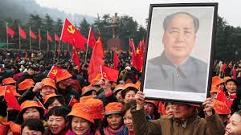

The Chinese Communist Party (CCP) was founded as a political party and a revolutionary movement on July 1, 1921 in Shanghai, China by revolutionaries namely Li Dazhao and Chen Duxiu. After the Bolsheviks' triumph in the Russian Revolution of 1917, the two individuals and others turned to Marxism. Politics and ideology are the major pillars on which the Communist Party of China was built. After 28 years, they won against Nationalists, founded the People's Republic of China, and became the ruling party of mainland China.
 CCP members including Mao Zedong, Liu Shaoqi, and Li Lisan started building labor unions in the cities during the unrest of 1920s China. In 1926-27, the CCP allied with the Nationalist Party making the First United Front to rid the country of the warlords who were preventing the formation of a strong central government, and initially, the partnership was incredibly effective. However, this didn’t last long as the CCP was forced underground in 1927, as the Nationalists led by Chiang Kai-shek (Jiang Jieshi) turned brutally against the communists and drove them out of Shanghai (White Terror). During the Long March (1934–1955), Mao and the remaining members of his army fled to Yan'an in northern China. Mao attained the CCP leadership position he would hold until his passing.
Mao Zedong declares at the start of the Chinese People's Political Consultative Conference in Peking that the new Chinese government will be “led by the Communist Party of China”. The Peking conference in September 1949 was both a celebration of the communist victory in the long civil war against Nationalist Chinese forces and the unveiling of the communist regime that would rule over China from then on. Since the 1920s, Mao and his communist supporters had been fighting against what they saw as a despite massive US support for the Nationalist regime, Mao's forces defeated the Nationalist regime in 1949 and drove it onto the island of Taiwan. Mao announced the victory of communism in China in September, with cannons firing salutes and ceremonial flags waving, and vowed to establish the constitutional and governmental framework to protect the “people's revolution”.
Mao declared, while outlining the various committees and agencies that would be established under the new regime, that “our state system of the People's Democratic Dictatorship is a powerful weapon for safeguarding the fruits of the people's revolution and opposing plots of foreign and domestic enemies to stage a comeback”. We must seize this weapon with both hands”. He labeled opponents of the communist government as “imperialistic and domestic reactionaries”. China would seek the friendship of “the Soviet Union and the new democratic countries” in the future. Mao also claimed that communism would help to end China's reputation as a developing country. “The era of dismissing the Chinese as uncivilized is over. We will emerge as a highly civilized nation in the world”. The People's Republic of China was formally established on October 1, 1949, with Mao Zedong as its leader. He remained in charge of the country until his death.